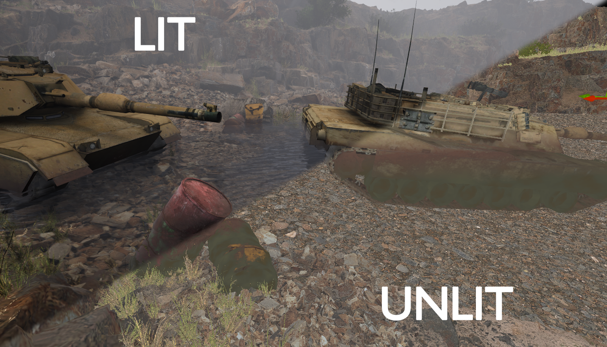

A procedural shader that adds rust using the signed distance field of a water plane, allowing corrosion to appear only where water would realistically accumulate.
Unreal Engine, Substance Designer, Material Editor

The shader samples distance from a water surface SDF and blends rust masks based on curvature and AO to avoid uniform buildup.